선체건조기능사 (2011-07-31 기출문제)
1과목: 조선공학일반
1. 광석이나 석탄운반선 등에서 일반적으로 채용되는 하역 장치는?
- 기중기식 하역 장치
- 데릭 붐식 하역 장치
- 컨베이어식 하역 장치
- 파이프 라인식 하역 장치
(정답률: 알수없음)

2. 그림과 같은 앵커에서 화살표로 표시된 부분은?
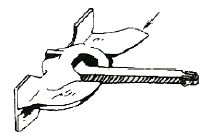
- 앵커 링(Anchor ring)
- 앵커 헤드(Anchor head)
- 앵커 생크(Anchor shank)
- 앵커 스톡(Anchor stock)
(정답률: 알수없음)
3. 화물을 실을 수 없는 상갑판 아래에 화물이 쏠릴 염려가 있는 공간을 없애는 목적으로 설치된 톱사이드 탱크(Topside tank)가 있는 것이 특징인 선박은?
- 유조선
- 목재 운반선
- 다목적 화물선
- 산적 화물선
(정답률: 알수없음)
4. 조선 재료 중 비철금속재료에 해당하지 않는 것은?
- 스테인리스강
- 황동
- 알루미늄 합금
- 청동
(정답률: 알수없음)
5. 다음 중 내연기관에 속하지 않는 것은?
- 증기터빈기관
- 디젤기관
- 가스터빈기관
- 가솔린기관
(정답률: 알수없음)
6. 선박의 추진장치 중 축계의 기능이 아닌 것은?
- 주기의 회전 동력을 추진기에 전달한다.
- 선체와 추진기를 연결하여 추진기를 지지한다.
- 추진기와 물의 작용으로 얻어진 추력을 선체에 전달한다.
- 선저부의 하중을 분산시켜 선체종강도를 높여준다.
(정답률: 알수없음)
7. 조타장치에서 타가 소요의 각도로 회전하였을 때 그 위치에 고정시키는 장치는?
- 원동기
- 추구장치
- 조종장치
- 전동장치
(정답률: 알수없음)
8. 그림과 같은 곡선도형의 면적은 약 몇 m2인가? (단, 높이 1.45m는 가로 길이 1.30m를 2등분한다.)
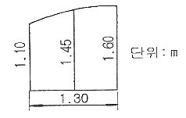
- 1.436
- 1.675
- 1.842
- 1.964
(정답률: 알수없음)
9. 프로펠러의 추력이 단위 시간에 하는 유효한 일을 나타내는 것은?
- 지시마력
- 제동마력
- 유효마력
- 추력마력
(정답률: 알수없음)
10. 복원력을 갖는 안정 평형 상태인 선박의 메타센터 높이의 조건은?
- GM ＞ 0
- GM = 0
- GM ＜ 0
- GM = -1
(정답률: 알수없음)
11. 선미흘수가 3.2m 이고 선수흘수가 2.2m 이라면 이 선박의 트림은 몇 m 인가?
- 1.0
- 2.2
- 3.2
- 5.4
(정답률: 알수없음)
12. 센티미터당배수톤수(TPC)를 구하는 식으로 옳은 것은? (단, 수선면적 AW, 유체의 비중량 γ 이다.)
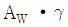
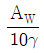
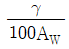
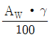
(정답률: 알수없음)
13. 선체 중앙부 건현갑판의 현측 상면으로부터 만재흘수선까지의 연직거리를 무엇이라 하는가?
- 형심
- 건현
- 흘수
- 현호
(정답률: 알수없음)
14. 선체길이에 대한 체적분포를 나타내며 선박의 저항 추진성능과 밀접한 관계가 있는 선형계수는?
- 방형계수
- 수선면계수
- 주형계수
- 중앙횡단면계수
(정답률: 알수없음)
15. 전통적으로 사용해 온 선박용 통신설비로서 조타실과 기관실 및 선수·미루에 조타상의 명령이나 연락 등을 전달하며 체인식과 로드식이 있는 장치는?
- 전성과
- VHF통신기
- 팩시밀리
- 텔레그래프
(정답률: 알수없음)
16. 다음 중 주강재가 사용되는 부재는?
- 타암
- 선미골재
- 타두재
- 프로펠러 축
(정답률: 알수없음)
17. 그림과 같이 선박이 상하 운동하는 상태는?
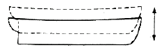
- 롤링(Rolling)
- 피칭(Piching)
- 히빙(Heaving)
- 서징(Surging)
(정답률: 알수없음)
18. 선체 표면의 급격한 형상 변화 때문에 발생하는 소용돌이에 기인하는 저항은?
- 마찰저항
- 공기저항
- 조와저항
- 잉여저항
(정답률: 알수없음)
19. 기하학적으로 상사한 두 선박의 프루드수가 동일하게 되는 속도를 무엇이라 하는가?
- 대응속도
- 전진속도
- 반류속도
- 실선속도
(정답률: 알수없음)
20. 다음 중 선박의 복원력에 영향을 주지 않는 것은?
- 선루
- 기관효율
- 유동수
- 중심의 상하 위치
(정답률: 알수없음)
2과목: 선박건조
21. 선박의 설계에서 공작 기술상의 지침과 관리지표가 기입된 공작도 및 부재별 블록별 부재표가 작성되는 단계는?
- 생산설계
- 상세설계
- 기본설계
- 개념설계
(정답률: 알수없음)
22. 가장 작은 면적으로 배치할 수 있으나, 부재를 운반할 방향 전환을 해야하는 문제점이 있는 공장배치는?
- I 자형
- U 자형
- L 자형
- T 자형
(정답률: 알수없음)
23. 선박건조 방식 중 블록건조방식의 장점이 아닌 것은?
- 크레인의 능력이 적어도 된다.
- 적절한 작업원의 배치가 용이하다.
- 기계화, 자동화가 용이하여 능률이 향상된다.
- 현장용접이 적어지므로 용접변형과 잔류응력을 감소시킨다.
(정답률: 알수없음)
24. 필릿 용접으로 발생한 각변형 형태로 그림과 같은 형상으로 수정하기 위하여 이면가열을 해야 하는 것은?
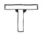
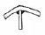
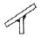
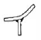
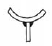
(정답률: 알수없음)
25. 다음 중 조립을 용이하게 할 목적으로 부착하는 피스가 아닌 것은?
- 문형 피스
- 리깅 스크루 피스
- 눈틀림 고치기 피스
- 스트롱 버클 피스
(정답률: 알수없음)
26. 용접결함 중 언더킷에 대한 설명으로 틀린 것은?
- 용접속도가 지나치게 큰 경우 발생한다.
- 용접전류가 지나치게 높은 경우 발생한다.
- 가는 지름의 용접봉으로 살붙임하여 보수한다.
- 용입이 커 심선의 용융량이 과다할 경우 발생한다.
(정답률: 알수없음)
27. 용접부 주위 모재에 균열이 발생한 경우, 균열이 더 이상 발전하는 것을 막기 위하여 균열부 양 끝에 뚫어 주는 구멍은?
- 스캘럽
- 빌지 홀
- 림버 홀
- 스톱 홀
(정답률: 알수없음)
28. 육각뿔, 정사각뿔형태의 물체 전개도를 그리기에 가장 적절한 전개 도법은?
- 평행선 전개법
- 방사선 전개법
- 삼각형 전개법
- 상관선 전개법
(정답률: 알수없음)
29. 선각공사에 필요한 부재의 모양과 치수를 도면 지시에 따라 절단하거나 굽히는 작업은?
- 조립공사
- 가공공사
- 의장공사
- 탑재공사
(정답률: 알수없음)
30. 선박건조작업에서 사용하는 일반적인 마킹의 종류가 아닌 것은?
- 조립을 위한 마킹
- 굽힘가공을 위한 마킹
- 가스절단을 위한 마킹
- 도장 전처리작업을 위한 마킹
(정답률: 알수없음)
31. 선체조립 시 사용되는 반목(盤木)의 역할이 아닌 것은?
- 선체 중량을 받친다.
- 블록의 이동을 용이하게 한다.
- 선각 블록의 정밀도를 유지한다.
- 선체 경사에 의한 선체의 불안정을 막는다.
(정답률: 알수없음)
32. 일반적으로 안전 보호구인 앞치마를 사용하는 작업이 아닌 것은?
- 외업일반
- 가스용접
- 프레스 작업
- 전기용접
(정답률: 알수없음)
33. 강판의 절단시 사용되는 가스 절단 중 산소-아세틸렌 절단의 원리는?
- 불꽃이 부재를 경화시켜 절단한다.
- 불꽃이 부재에 산화철을 만들어 절단한다.
- 불꽃이 부재에 탄화철을 만들어 절단한다.
- 불꽃이 부재에 용융환원작용을 일으켜 절단한다.
(정답률: 알수없음)
34. 세로 진수시 선미로부터 진수하는 이유가 아닌 것은?
- 부력을 빨리 얻을 수 있다.
- 프로펠러, 키 등의 운반 설치가 편리하다.
- 선미가 선수보다 강도가 좋아 지지점으로 유리하다.
- 몰입부가 뜰 때 선수가 선체의 지지점이 되는 것이 유리하다.
(정답률: 알수없음)
35. 용접에 의해 선수미 부분이 치켜 올라가는 경향을 예측하여 미리 설치 위치를 그만큼 낮추어 완성 되었을 때 용골 밑면이 일직선이 되도록 시공하는 것을 무엇이라 하는가?
- 턴버클
- 코킹업
- 코킹다운
- 턴오버
(정답률: 알수없음)
36. 정(chisel)을 사용할 때의 유의사항으로 틀린 것은?
- 담금질한 재료는 정으로 작업하면 안된다.
- 정머리의 찌그러진 것은 수정해서 사용한다.
- 정의 날끝 각도는 공작물의 재질에 상관없이 사용한다.
- 정머리 부분에 기름이 묻어 있으면 깨끗이 닦아서 사용한다.
(정답률: 알수없음)
37. 건조독을 이용한 선박건조의 장점이 아닌 것은?
- 진수 작업을 안전하게 할 수 있다.
- 선형 결정짓기와 용접 발판 공사가 쉽다.
- 건조할 때에 블록을 수평으로 탑재할 수 있다.
- 다른 방식보다 건조 능력이 제한적이어서 설치비용이 저렴하다.
(정답률: 알수없음)
38. 선박용 강재의 가공기계로서 산형강의 절단에 사용되는 장비는?
- 엔드 밀(End mill)
- 롤러 시어(Roller shear)
- 앵글 커터(Angle cutter)
- 베벨링 머신(Beveling machine)
(정답률: 알수없음)
39. 선대 진수시 미끄럼대가 미끄러져 내려가는 것을 막기 위하여 설치하는 것은?
- 트리거(Trigger)
- 리브 밴드(Rib band)
- 브라켓(Bracket)
- 도그 쇼어(Dog shore)
(정답률: 알수없음)
40. 밸러스트 탱크 및 공탱크의 빌지 파이프 끝 단부에 이물질 유입의 방지를 위해 부착하는 것은?
- 로즈 박스
- 스트레이너
- 밸러스트 박스
- 라이트 박스
(정답률: 알수없음)
3과목: 선박구조 및 조선제도
41. 마진 플레이트(Margin plate)와 직접적으로 고착되는 부위가 아닌 것은?
- 늑골
- 내저판
- 외판
- 이중저 외측 브래킷
(정답률: 알수없음)
42. 그림과 같은 선체 정면도에서 “가~다” 각각의 명칭을 옳게 짝지은 것은?
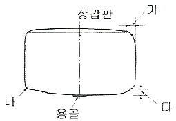
- 가 : 플레어, 나 : 빌지, 다 : 텀블홈
- 가 : 캠버, 나 : 선저 기울기, 다 : 빌지
- 가 : 텀블홈, 나 : 빌지, 다 : 선저 기울기
- 가 : 플레어, 나 : 텀블홈, 다 : 선저 기울기
(정답률: 알수없음)
43. 강력갑판에 대한 설명으로 옳은 것은?
- 노출된 갑판
- 기관실에 연속된 갑판
- 최상층 전통연속 갑판
- 상갑판이 연속되지 않고 부분적으로 다른 부분의 상갑판보다 높은 갑판
(정답률: 알수없음)
44. 그림과 같은 형상의 단면도를 무엇이라 하는가?
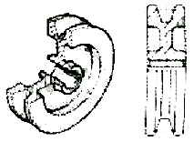
- 온 단면도
- 한쪽 단면도
- 부분 단면도
- 회전 단면도
(정답률: 알수없음)
45. 축로를 설치하는 목적이 아닌 것은?
- 축계의 검사를 용이하게 한다.
- 기관실의 진동을 줄일 수 있다.
- 선미관 또는 스터핑 상자의 수리를 쉽게 할 수 있다.
- 선미관이 파손된 경우에도 화물창의 침수를 막을 수 있다.
(정답률: 알수없음)
46. 보강재를 생략하고 격벽판을 굴곡시켜 강도를 보강한 형태의 격벽 명칭은?
- 수밀격벽
- 비수밀격벽
- 파형격벽
- 디프탱크격벽
(정답률: 알수없음)
47. 선체구조도에서 실체늑판을 나타내는 약자는?
- S.F
- S.BM
- F.L
- STR
(정답률: 알수없음)
48. 다음 중 디프 탱그(Deep tank)의 종류에 포함되지 않는 것은?
- 피크 탱크
- 연료유 탱크
- 화물 탱크
- 트리밍 탱크
(정답률: 알수없음)
49. 다음 중 늑골의 역할이 아닌 것은?
- 갑판상 무게를 지탱한다.
- 선체의 횡강도를 유지한다.
- 선측 외판의 변형을 방지한다.
- 화물의 구분 적재에 편리하다.
(정답률: 알수없음)
50. 컨테이너선의 화물창 내에 컨테이너 적재시 사용하기 위해 설치되는 구조물은?
- 거전
- 로킹 핀틀
- 힐 핀틀
- 셀 가이드
(정답률: 알수없음)
51. 일반배치도에 표시되는 약도에서 페어리더가 아닌 것은?
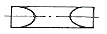
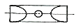
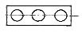
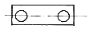
(정답률: 알수없음)
52. 다음 중 선체선도의 각 면상에 모두 곡선으로 나타나는 선은?
- 수선
- 갑판현측선
- 버톡선
- 다이아고널선
(정답률: 알수없음)
53. 상갑판상에 설치하는 그림과 같은 단면의 구조물은?
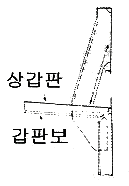
- 거전
- 불워크
- 필러
- 오픈레일
(정답률: 알수없음)
54. 선체의 주요 강도 부재의 배치와 치수 및 그 밖의 선체 각 부분의 상세도를 작성하는데 중요한 기본 구조도는?
- 강재배치도
- 일반배치도
- 외판전개도
- 중앙횡단면도
(정답률: 알수없음)
55. 파장이 선체의 길이와 같은 경우 선체 길이의 중앙부에 파저가 위치하는 상태는?
- 래킹(Racking)상태
- 호깅(Hogging)상태
- 좌굴(Buckling)상태
- 새깅(Sagging)상태
(정답률: 알수없음)
56. 선수의 형상과 명칭이 옳게 짝지어진 것은?
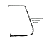
: 경사형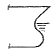
: 램형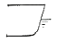
: 구상형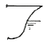
: 클리퍼형
(정답률: 알수없음)
57. 선체 종늑골식 구조에 대한 설명으로 옳은 것은?
- 이중저 내의 구조로는 적합지 못하다.
- 보강재의 교차가 적어 공사가 간편하다.
- 선각 중량이 경감되고, 종강도가 커진다.
- 선창 내의 돌출부가 적어 일반 화물창에 적합하다.
(정답률: 알수없음)
58. 선미의 급격히 변화하는 형상을 유지하기 위하여 선미 트랜섬으로부터 방사상으로 배치된 늑골은?
- 창내 늑골
- 캔트 늑골
- 선수 늑골
- 특설 늑골
(정답률: 알수없음)
59. CAD 제도시 실행한 명령어를 되돌리는 복귀 명령어는?
- UNDO
- REDO
- PASTE
- EXPRT
(정답률: 알수없음)
60. 액화 가스 운반선의 화물 탱크에 대한 설명으로 틀린 것은?
- 모스식은 화물액에 의한 하중을 탱크로 지지하지 않고 단열 내장재를 통하여 선각 전체를 골고루 걸리도록 한 구조이다.
- 화물 탱크의 재료로 알루미늄 합금, 니켈강, 스테인리스강 등이 사용된다.
- 탱크는 내부와 외부의 온도차로 인한 열응력에 견딜 수 있는 단열 구조로 되어야 한다.
- 탱크의 파손으로 인한 화물 유출의 지연을 막기 위해 2차 방벽이 필요하다.
(정답률: 알수없음)